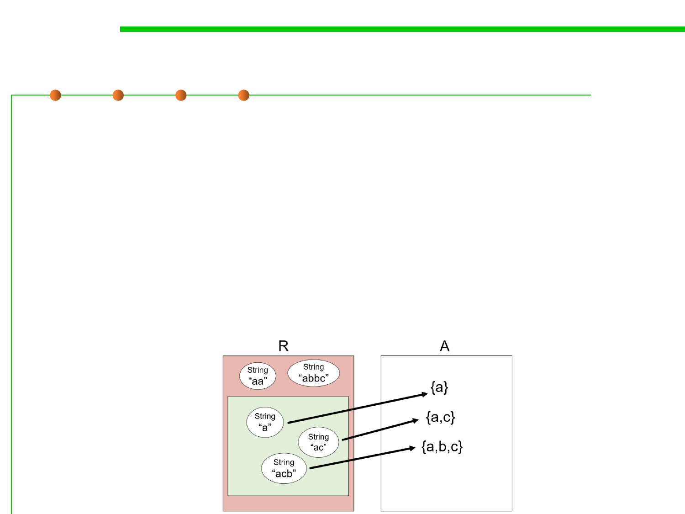

Abstraction Function 抽象函数
3.3 Abstract Data Type (ADT)
▪ An abstraction function that maps rep values to the abstract values
they represent:
AF : R → A
▪ The arcs in the diagram show the abstraction function.
▪ In the terminology of functions, the properties can be expressed by
saying that the function is surjective (also called onto), not
necessarily injective ( one-to-one ) and therefore not necessarily
bijective, and often partial.(AF是满射的、未必单射、未必双射)